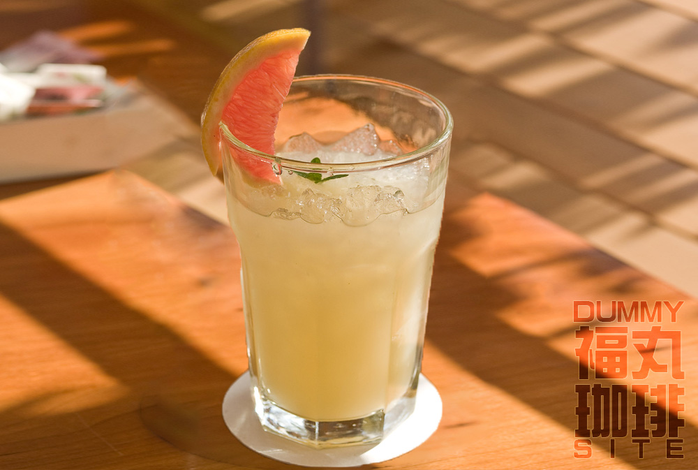
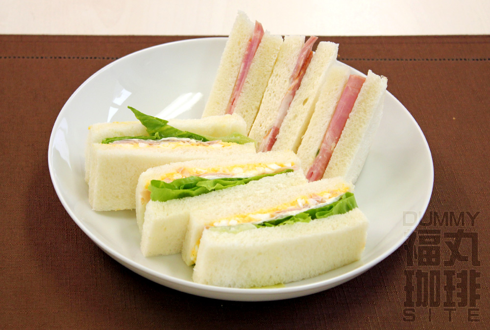
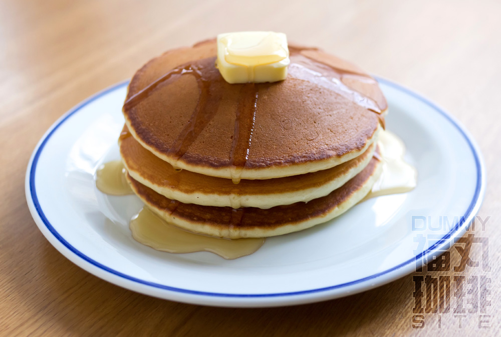

福丸珈琲店 メニュー
おすすめコーヒー
- オリジナルブレンド
- 500円
- 長年の経験に裏打ちされた個別焙煎で6種の厳選豆の持ち味を最大限に引き出した、ノア不変のブレンドです。
苦味と酸味のバランスが取れながら、メリハリのある味わいと立ち立ち昇る香りをお楽しみ下さい。 - オリジナルブレンドアイス
- 500円
- 個々の個性に合わせた深煎りの豆をブレンドした定番のアイスコーヒー用ブレンドで、極上の咽越しとコクがお楽しみ頂けます。
ホットでも美味しくお召し上がり頂けます。 - キリマンジャロＡＡ
- 500円
- しっかりとしたボディを持つタンザニアの一級品。AAの中でも最高級である証のＫＩＢＯ。
やや深めに煎り上げ、華やかな香りを残しつつ程よい苦味と芳醇なコクを引き出しました｡ - ブルーマウンテン
- 600円
- 柔らかな味わいを持ちながら他のカリブ産の豆とは一線を隔した気品のある香気の強さは、依然他の追随を許さない豆です。
価格以上に常に品薄な豆で偽物が多く出回っていますが、当店では常に正当な豆のみご用意しております。 - アメリカンコーヒー
- 500円
- カプチーノ
- 550円
- カフェラテ
- 550円
- エスプレッソ
- 550円
- ウインナーコーヒー
- 600円
- アイスカフェラテ
- 450円
紅茶・ハーブティ
- ブレンドティー
- 400円
- 福丸珈琲店オリジナルのミルクにもレモンにもよく合うブレンドです。
- ハーブティー
- 500円
- ミント・ハイビスカス・カモミールからお選びいただけます。
- フレーバーティー
- 500円
- リンゴ・ピーチ・パイナップル・チョコレートからお選びいただけます。
- アイスブレンドティー
- 450円
- 福丸珈琲店オリジナルのミルクにもレモンにもよく合うブレンドです。
- アイスハーブティー
- 550円
- ミント・ハイビスカス・カモミールからお選びいただけます。
- アイスフレーバーティー
- 550円
- リンゴ・ピーチ・パイナップル・チョコレートからお選びいただけます。
その他のお飲み物
- オレンジジュース
- 400円
- 生絞りグレープフルーツジュース
- 450円
- ミックスジュース
- 450円
軽食
- ハムチーズサンド
- 500円
- 卵サンド
- 500円
- ホットドッグ
- 450円
デザート
- 喫茶店のホットケーキ
- 550円
- オリジナルプリン
- 350円
- クッキー・チョコレートセット
- 300円